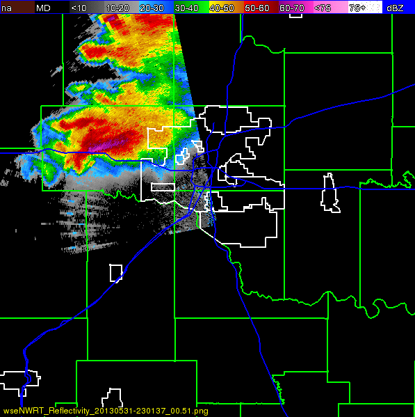

HISTORICAL RADAR / SOURCE COMPARISON
The edge is in the published image.
This is NWRT phased-array reflectivity, with the original dBZ scale. It is not a photograph, a visible funnel outline or a surface wind map. The sharp boundary is already present in the NWS source frame. Atlas has not cropped away echoes or filled empty areas.
Twelve retained radar observations
Choose a complete retained image or play the display sequence. These are 12 selected observations from the published GIF with 242 frames, not its complete loop. Retained labels are separated by 213, 214 or 223 seconds. The display sequence gives each checked image at least one second on screen. Its pace is a reading aid, not radar update cadence, current weather or motion between observations. It does not advance the Atlas clock.
The static comparison is available below. The observation browser starts paused.
Reload the observation browser
wseNWRT_Reflectivity_20130531-230137_00.51.png.The static comparison is labeled 23:01:37, interpreted as UTC. Clock accuracy is not independently established.

What was checked
On September 27, 2026, the NWS GIF was retrieved again. Its SHA-256 matched the retained original. Pillow 12.3.0 decoded the GIF sequentially with frame composition. Each of the 12 published PNGs matched its complete decoded frame pixel for pixel at 597 by 599 pixels. The legend, source label and full image extent were preserved.
The comparison establishes extraction fidelity. It does not turn the image into a georegistered coverage polygon or identify the cause of every blank pixel.
Coverage is part of the measurement
The NWRT instrument could electronically scan a 90 degree azimuth sector, with its pedestal repositioned to follow selected weather. That documented capability makes a sector boundary a plausible explanation for an abrupt echo edge. The exact beam mask and scan commands for this frame have not been recovered. An unobserved area is different from an observed area with weak or absent returns. Priegnitz, Torres and Heinselman, introduction and tracking algorithm.
The printed filename supplies each time label. The initial comparison is labeled 23:01:37. Atlas interprets these labels as UTC, consistent with the NWS chronology, but the labels themselves do not state a timezone. That interpretation is explicit and is not an independent clock calibration. No exact coverage polygon, elevation interpretation from the filename, or camera registration is inferred. The timeline and geographic replay show only a preceding retained frame up to 240 seconds old. Browsing this source reader does not change that age rule or supply intermediate observations.
Source and reuse
NWS event account · Original published GIF · NWS data and product policy.

Credit: NOAA / National Weather Service. Original radar colors are retained. This historical product is not a current warning or forecast. The source imagery is government material under the cited policy, not original Atlas artwork.